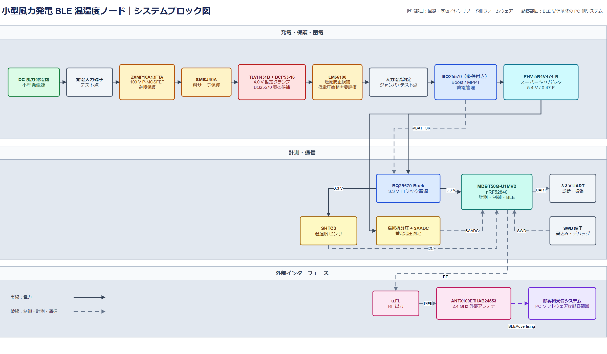

企画・設計方針
電源成立性・システム構成 試作前評価
風力発電を一度スーパーキャパシタへ蓄え、電力が確保できた時だけ温湿度を測定・送信します。現時点の設計計算では計測・BLE通信は成立見込みであり、試作評価で最終確認します。

図1 発電・保護・蓄電から計測・BLE送信までの構成
| 計測対象 | 温度・湿度・蓄電電圧 |
|---|---|
| 送信方式 | BLE Advertising、1M PHY、0 dBm、6回 |
| 送信周期 | 基準10分。1時間周期も対応可能な見込み |
| ロジック | nRF52840 BLEモジュール、3.3 V動作 |
| 蓄電 | 5.4 V / 0.47 Fスーパーキャパシタ |
| 電源IC | BQ25570RGR、条件付き採用 |
|---|---|
| BLE・制御 | MDBT50Q-U1MV2、採用 |
| 温湿度 | SHTC3、採用 |
| 入力保護 | 逆接・過電圧保護を試作評価後に確定 |
| 成立条件 | 最低比較点相当の発電時間率25%以上を暫定条件 |
動作・評価計画
蓄電量に応じて動作を制限し、不安定な電圧での送信を避けます。
起床後に蓄電電圧を確認し、十分な場合のみ温湿度を測定してAdvertisingを6回送信します。処理後は低消費電力待機へ戻ります。発電電力が不足しても、蓄電が残っている間はスーパーキャパシタが不足分を供給します。
平均消費は約76-79 uWの見込みで、通常運転は可能です。ただし完全放電から1時間以内の初回送信は保証せず、コールドスタート時間を試作で確認します。
| 評価項目 | 現時点のリスク | 試作での確認内容 |
|---|---|---|
| 要実測発電特性 | 開放電圧、過渡電圧、風速ごとの最大電力点が未確定です。 | 同一風速・回転数でI-Vカーブと過渡波形を測定します。 |
| 要実測起動条件 | 前段保護回路と0.47 F蓄電素子により、コールドスタートが遅れる可能性があります。 | 完全放電から入力を掃引し、始動電圧・電力・初回送信時間を測定します。 |
| 要比較回収効率 | 30-50%は暫定仮定です。高電圧域ではBQ25570案の回収損失が増える可能性があります。 | BQ25570案と高耐圧Buck案を同一入力で比較します。 |
| 要実測低電圧送信 | 低温・最大送信出力で3.3 Vが低下し、リセットする可能性があります。 | 蓄電電圧3.58 V付近で最大送信条件を評価します。 |
| 要実測蓄電・保護 | キャパシタのリーク個体差と、満充電時の入力クランプ発熱が未確認です。 | 温度別リーク、無風継続時間、クランプ温度を測定します。 |
| 要確認設置条件 | 年間の風速分布、発電時間率、要求無風継続時間が未確定です。 | 設置条件を確認し、蓄電容量と送信周期を最終決定します。 |